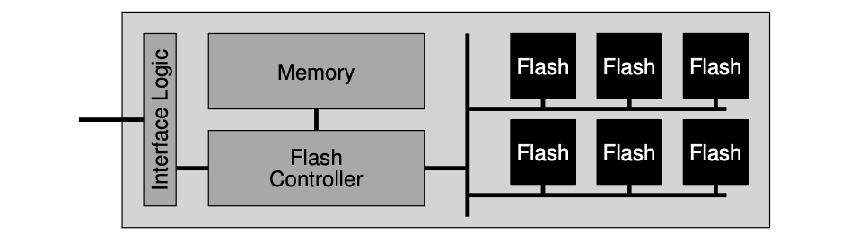

《Operating Systems: Three Easy Pieces》读书笔记（第 44-51 章）
书接上回，本文是第 44-51 章的笔记。内容基于自身情况记录，仅供参考，Dialogue 的相关章节已略过。
Chapter 44: Flash-based SSDs
- Flash chips: Designed to store one or more bits in a single transistor.
- Types:
- Single-level Cell (SLC): Only a single bit is stored within a transistor (i.e., 1 or 0).
- Multi-level Cell (MLC): Two bits are encoded into different levels of charge, e.g., 00, 01, 10, and 11 are represented by low, somewhat low, somewhat high, and high levels.
- Triple-level Cell (TLC): Same as above, which encodes 3 bits per cell.
- Basic operations:
- Read (a page): Read a specific page by specifying the page number, it supports random access which takes 10s of microseconds or so for each.
- Erase (a block): Erase the entire block the page lies within (by setting each bit to the value 1), which takes a few milliseconds to complete.
- Program (a page): Change some of the 1’s within a page to 0’s, and write the desired contents of a page to the flash, which usually takes around 100s of microseconds. We have to first erase the entire block to write to a page within a block.
A Simple Flash Chip: Pages Within Blocks
- Flashed based Solid-state Storage Device (SSD): An SSD consists of some number of flash chips, as well as some amount of volatile memory, which is useful for caching and buffering of data and for mapping tables. The flash translation layer (FTL) provides the functionality to turn the client reads and writes on logical blocks into internal flash operations.

- Wear leveling: FTLs could try to spread writes across the blocks of the flash as evenly as possible, ensuring that all of the blocks of the device wear out at roughly the same time. Sometimes, a block will be filled with long-lived data that does not get over-written, so the FTL must periodically read all the live data out of such blocks and re-write it elsewhere, thus making the block available for writing again.
- Sequential-programming: FTLs will commonly program pages within an erased block in order, from low page to high page.
- Hybrid mapping: To enable flexible writing but also reduce mapping costs, FTL logically has two types of mapping table in its memory: a small set of per-page mappings in what we’ll call the log table, and a larger set of per-block mappings in the data table. To keep the number of log blocks small, the FTL has to periodically examine log blocks (which have a pointer per page) and switch them into blocks that can be pointed to by only a single block pointer.
Hybrid Mapping - Switch Merge
Hybrid Mapping - Partial Merge
Hybrid Mapping - Merge Comparison
Chapter 45: Data Integrity and Protection
- Two types of single-block failures:
- Latent sector errors (LSEs): Which arises when a disk sector (or group of sectors) has been damaged in some way. In-disk error correcting codes (ECC) are used by the drive to determine whether the on-disk bits in a block are good, and in some cases, to fix them. This error could be fixed with the help of RAID 4/5.
- Block corruption: The cases where a disk block becomes non-detectable (.e.g buggy disk firmware writes a block to the wrong location, the block transferred from the host to the disk across a faulty bus, etc) and returns bad data. The detection of this error could be done with the help of checksum.
- Lost write: Occurs when the device informs the upper layer that a write has completed but in fact it never is persisted. This issue could be fixed via a “write verify“, by immediately verifying the data after a write. Besides, we can also add checksum in each file system inode for double verification of the validity of the corresponding data block (.e.g ZFS).
- Checksum: Which is simply the result of a function that takes a chunk of data (say a 4KB block) as input and computes a function over said data, producing a small summary of the contents of the data (say 4 or 8 bytes). Some usual checksum algorithms:
- XOR: Easy to implement, but not able to detect the corruption if two bits in the same position within each checksummed unit change.
- Fletcher checksum: Position-dependent, and simple to compute.
// Un-optimized version.
uint16_t Fletcher16(uint8_t *data, int count) {
uint16_t sum1 = 0;
uint16_t sum2 = 0;
int index;
for (index = 0; index < count; ++index) {
sum1 = (sum1 + data[index]) % 255;
sum2 = (sum2 + sum1) % 255;
}
return (sum2 << 8) | sum1;
}
- Cyclic redundancy check (CRC): Treat data block D as if it is a large binary number (it is just a string of bits after all) and divide it by an agreed upon value (k). The remainder of this division is the value of the CRC.
- Checksum usage: When reading a block D, the client will calculate the checksum of the on-disk data and compare it with the saved checksum to determine whether any corruption exists.
- Basic layout:
- The layout with a physical ID to attack “misdirected writes”:

- Other improvements:
- Combine data copying and checksumming into one streamlined activity.
- Disk scrubbing: Periodically reading through every block of the system, and checking whether checksums are still valid, the disk system can reduce the chances that all copies of a certain data item become corrupted. Typical systems schedule scans on a nightly or weekly basis.
Chapter 48: Distributed Systems
- Remote Procedure Call (RPC): The target is to make the process of executing code on a remote machine as simple and straightforward as calling a local function.
- The RPC system has two pieces：
- Stub generator (protocol compiler): To remove some of the pain of packing function arguments and results into messages by automating it.
- Runtime library: Handling some tough tasks, .e.g: locating a remote service specified by client, handling long-running requests, handling calls with large arguments, etc.
- Basic flows:
- Client:
- Create a message buffer.
- Pack the needed information into the message buffer.
- Send the message to the destination RPC server.
- Wait for the reply.
- Unpack return code and other arguments.
- Return to the caller.
- Server:
- Unpack the message.
- Call into the actual function.
- Package the results.
- Send the reply.
- Client:
- Notes:
- Many RPC packages are built on top of unreliable communication layers, such as UDP. The RPC layer achieves the desired level of responsibility by using timeout/retry and acknowledgments. By using some form of sequence numbering, the communication layer can guarantee that each RPC takes place exactly once (in the case of no failure), or at most once (in the case where failure arises).
Chapter 49: Sun’s Network File System (NFS)
- NFS protocol: A block-based protocol, performs I/O that is proportional to the size of the read or write.
- Crash recovery: With a stateless protocol, the server, by design doesn’t keep track of anything about what is happening at each client, the clients themselves need to keep all the information for a request. Also, most NFS requests (LOOKUP, READ, WRITE) are idempotent, thus, the client could peform the recovery via a simple “retry“.
- File handle: Used to uniquely describe the file or directory a particular operation is going to operate upon, which consists of three parts:
- Volume identifier: Which informs the server which file system the request refers to (an NFS server can export more than one file system).
- Inode number: Indicate which file within that partition the request is accessing.
- Generation number: Which is needed when reusing an inode number; by incrementing it whenever an inode number is reused, the server ensures that a client with an old file handle can’t accidentally access the newly-allocated file.
- Potocol in action:
Reading A File: Client-side And File Server Actions
- Client-side caching: The NFS client-side file system caches file data (and metadata) that it has read from the server in client memory. The cache also serves as a temporary buffer for writes (write buffering). The cache consistency problem needs to be handled properly via manners like flush-on-close, and before using a local cached block, the client-side file system will issue a GETATTR request to the server to fetch the file’s attributes (maybe from attribute cache) to determine which copy is the latest.
- Server write buffering: NFS servers must commit each write to stable (persistent) storage before informing the client of success. One trick is to first put writes in a battery-backed memory, thus enabling to quickly reply to WRITE requests without fear of losing the data and without the cost of having to write to disk right away; the second trick is to use a file system design specifically designed to write to disk quickly when one finally needs to do so.
Chapter 50: The Andrew File System (AFS)
- AFS: Designed for scalability.
- File identifier: Used to specify which file a client is interested in, which includes: a volume identifier, a file identifier, and a “uniquifier” (to enable reuse of the volume and file IDs when a file is deleted).
- Callback: Which is simply a promise from the server to the client that the server will inform the client when a file that the client is caching has been modified.
- Potocol in action:
Reading A File: Client-side And File Server Actions
- Cache consistency timeline:
- The Writes to a file are immediately visible to other local processes.
- Whichever client calls
close()last will update the entire file on the server last. - Making updates visible at the server and invalidates cached copies at the exact same time, which is when the updated file is closed.
Cache Consistency Timeline
- Crash recovery:
- After the client reboots and re-connected to the server, it should ask the server whether its cached copy of file is still valid.
- Upon server restart, each client of the server must realize that the server has crashed and treat all of their cache contents as suspect, and reestablish the validity of a file before using it.
评论 | Comments